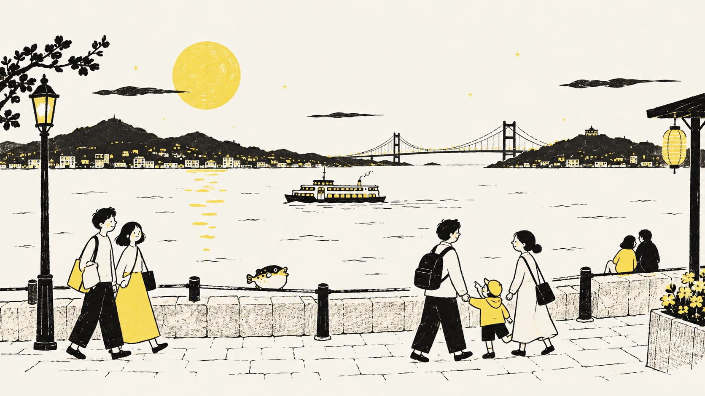
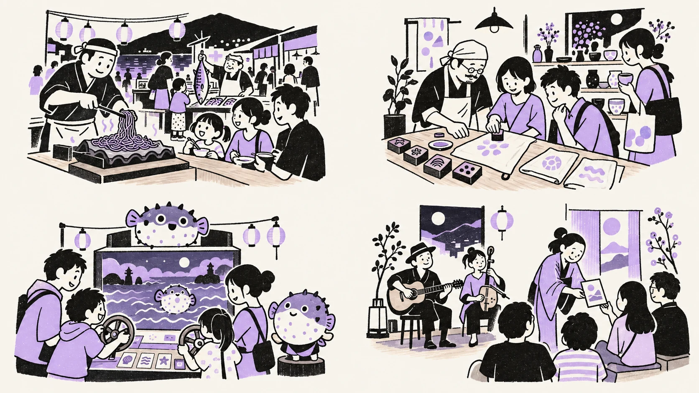
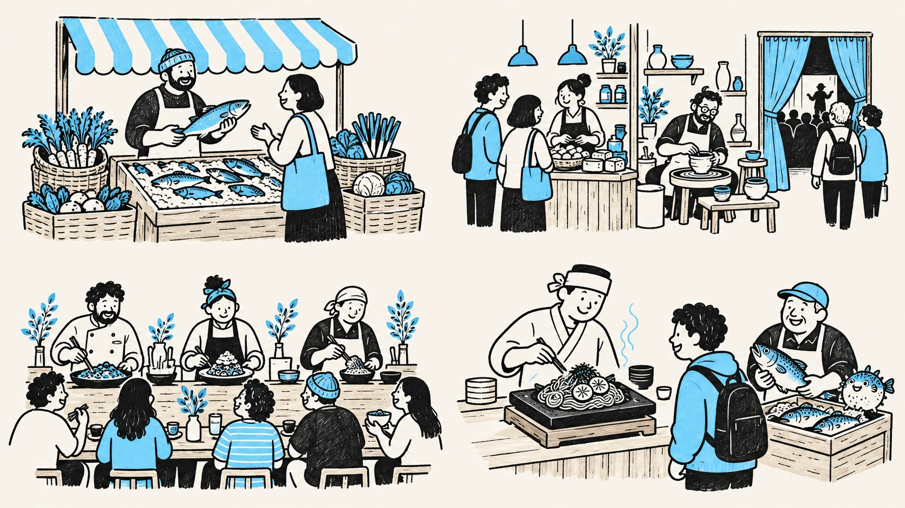
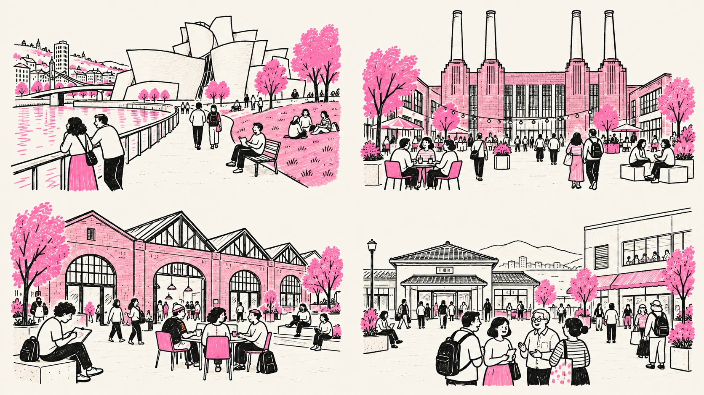
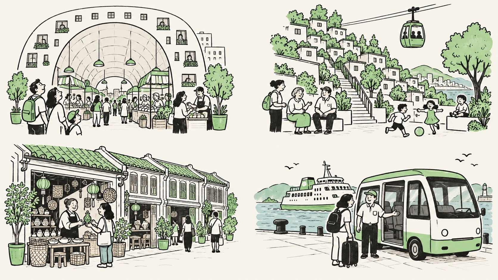

モビリティデザインラボの、まちづくりノート独自構想 / 2026.09
SHIMONOSEKI
LOCAL & GLOBAL LOOP
海峡の夜に、
もう一泊。
夕景を眺め、土地の味に出会い、夜の遊びへ。
翌朝までの旅が、地元の商いと仕事につながる。

大丸下関店の営業終了後を見据えた、
関門広域の滞在拠点の提案。
ここから先は、これからつくりたい未来の話です。 大丸・シーモール・自治体等の公式計画ではありません。出店・改修・連携・運行・開業は未決定です。
建物から、まち全体へ。来て、巡って、泊まる。
来て、巡って、泊まる。
そのお金が、地元の仕事に。
大丸跡は、その循環をつくる入口。
シーモール、唐戸、長府、門司港、小倉まで、一つの旅に。
呼ぶ。
ここで食べたい。
食のつくり方を見る
ここでしか出会えない。
巡る。
駅前に車を置き、
関門のマップを見る
バス・船・鉄道で街へ。
泊まる。
遊んで、食べて、主役に。
夜の４つのお楽しみへ
夜の帰路までつなぐ。
地元に残す。
地域の人に支払い、
お金と仕事の仕組みへ
次の挑戦と仕事を育てる。
地域への再投資が、また来る理由をつくる。
目指す循環を示した構想です。宿泊・追加消費・地域所得・雇用の効果は、実証で確認します。
世界の知恵を、建物の骨格に。海峡のまちが、
海峡のまちが、
ひとつ屋根の下に。
土地の味に会い、つくる人と話し、物語で遊ぶ。
地元の人は、いつもの買い物や仕事に。
旅の人は、下関をもっと好きになる入口に。
市場が、人を呼ぶ。
商いと文化が、また来る理由になる。
03 / 文化と日常を支える毎週通う人と、
毎週通う人と、
旅する人が出会う。
学び、仕事、遊び、上演。
文化の予算も、一つの運営で考える。
Granville Island × King’s Cross
3〜5Fの役割へ ↓３本の柱を、まちとつなぐ。入口は駅前。
入口は駅前。
行き先は、関門全体。
1Fの旅の案内から、シーモール・唐戸・長府へ。
船と鉄道で、門司港・小倉へ。
既存の建物、交通、店をつなぎ直します。
事例で確認できる仕組みを、下関向けに組み合わせた企画案です。海外の集客や利益を、下関でも再現できると保証するものではありません。世界９事例と出典を読む
THE PROJECT, IN 3 MAPS建物。下関市内。関門全体。
どこで楽しむ？
どう、つながる？
建物の中から、海峡の向こうまで。
３つのマップで見る、
「もう一泊したくなる街」のつくり方。
01 / 商い・文化・日常を、一つの運営に。下の階で、出会う。
図を大きく見る ↗下の階で、出会う。
上の階で、もっと好きになる。

B1・1F商いの入口日常と観光を、食でつなぐ。
2〜4Fここに来る目的つくる・遊ぶ・物語に入る。
5F毎週通う理由学び・仕事・地域活動を支える。
各階が、何をする場所なのか。６つの場所で、
６つの場所で、
一つのまちをつくる。
階は仮置きです。開く順序は、需要と使える区画から決めます。
B1機能配置案
まちの台所
日常の買い物が、商いの土台になる。
地元の食材、惣菜、生産者の小さな売場。手頃な価格帯を揃え、毎週通いたい食品フロアに。
昼日常の買い物・生産者との対話
夜夕食の持ち帰り・翌朝の味
運営の役割と、参考にした仕組み
運営すること：短期出店と小区画で、地域のつくり手が試せる入口に。共用設備の負担も含めて契約条件を示す。
各事業の収入候補：食品・惣菜の販売。収益性は未確認。
考え方の参照：Pike Place。フロア構成や企画自体はMDLの提案です。
1F機能配置案
下関の食卓と、旅の入口
ここで下関を知って、まちへ出かける。
瓦そば、ふく、あんこう、地魚。料理人の実演を囲む共用席と、旅の相談・荷物預かりを一緒に。
昼旬のランチ・まちへの案内
夜SEAFOOD NIGHT・小皿の食べ歩き
運営の役割と、参考にした仕組み
運営すること：食の編集担当が店・価格帯・季節の献立を選ぶ。唐戸の市場、長府の本店や工房へ案内し、館外の利用も測る。
各事業の収入候補：飲食・有料食体験・荷物預かり。収益性は未確認。
考え方の参照：Time Out Lisbon / Markthal。フロア構成や企画自体はMDLの提案です。
2F機能配置案
つくり手の路地
つくる人に会うと、おみやげが変わる。
地元の工房、老舗、若いブランドを小区画で。日本ブランドとの共同商品も、下関の技や素材から育てる。
昼制作実演・学び・小さな出店
夜JAPAN NIGHT・名入れや版押し
運営の役割と、参考にした仕組み
運営すること：短期出店 → 有料体験 → 共同商品 → 館外の販路へ。共益費を含む負担、選定理由、更新・退出の条件を公開する。
各事業の収入候補：商品販売・体験料・制作受注。収益性は未確認。
考え方の参照：Pike Place / Chinatown。フロア構成や企画自体はMDLの提案です。
3F機能配置案
海峡あそび場
関門そのものが、遊びになる。
潮を読み、船を動かし、仲間と港を目指す。地元の制作者とつくる、繰り返し遊べる協力型の体験へ。
昼家族の遊び・海峡を知る体験
夜POP CULTURE NIGHT・協力ゲーム
運営の役割と、参考にした仕組み
運営すること：可動式の体験から検証。オリジナル企画を核に、既存IPは許諾後の期間限定。昼の街歩きへミッションをつなぐ。
各事業の収入候補：体験料・企画商品の販売。収益性は未確認。
考え方の参照：地域文化を育てる考え方からのMDL案。フロア構成や企画自体はMDLの提案です。
4F機能配置案
ものがたり劇場
日本史が動いたまちを、夜の舞台へ。
神話・伝承、源平、幕末維新、下関講和条約。地域の演者による短い芝居と音楽を、季節ごとに入れ替える。
昼稽古・ワークショップ・小公演
夜LIVE & STORY・参加型の夜公演
運営の役割と、参考にした仕組み
運営すること：制作費と出演料を先に予算化。確定した事業収入・契約財源の範囲で上演し、余剰が出たら次の作品を支える。
各事業の収入候補：公演料・講座料・会場利用料。収益性は未確認。
考え方の参照：Granville Island。フロア構成や企画自体はMDLの提案です。
5F機能配置案
学びと仕事の広場
旅人が少ない日にも、通う理由を。
自習、仕事、地域の講座、創業相談。学生と事業者が出会い、下の階の商いに関わる日常の拠点へ。
昼自習・仕事・地域の講座
夜学び合い・次の企画の相談
運営の役割と、参考にした仕組み
運営すること：継続して使う運営者・利用者を先に確かめる。学生等の支援枠は財源を決める。医療・行政等は周辺機能と需要を確認して選ぶ。
各事業の収入候補：会員料・貸室料・講座料。収益性は未確認。
考え方の参照：King’s Cross。フロア構成や企画自体はMDLの提案です。
館全体の編集と運営を、長く担う。店が育ち、文化が続く。
出店者の会計 施設運営の会計
店が育ち、文化が続く。
その仕組みまで、つくる。
出店を選び、育てる。共用席や催しを運営し、街へ案内する。地域企業が参加する運営組織に、これらを継続して担う責任と予算を置く案です。
商品・飲食・体験の売上
仕入れ、人件費、賃料等を払い、各事業を続ける。固定賃料・歩合・共益費を合計して負担を確認。
賃料・歩合・直営事業収入等
編集・販促・清掃・警備・夜の運営を支える。出店者の売上全額が、施設の収入になるわけではありません。
運営費・修繕積立・運転資金を確保する。そのうえで生まれた余剰を文化の制作・創業支援・学生の利用支援へ。
Granville Islandの仕組みからの転用案。文化の基礎予算は、確定した収入・契約財源で先に用意します。将来の黒字だけを頼りに始めず、配分上限と判断者を決めます。
出店条件・選定理由・共通費・還元実績を公開し、利益相反を管理。地域貢献は地元調達・雇用などの実績で確かめます。公的資金を使う場合は、制度の目的と公平な手続を確認します。
地元に残る所得と、雇用の測り方へ →最初に試すのは、この組み合わせ。
小さな食卓 ＋ 一つの体験 ＋ まちへの案内。
使える低層の区画で有料開催。食だけの日とも比べ、追加購入・館外利用・再来訪、出店者と運営者それぞれの収支を確かめます。
上の階は、予約需要、担い手、設備・避難・維持費が確かめられた用途から。継続利用が見込めるなら、5Fの日常機能を先に試す選択もあります。
需要が弱ければ区画・時間・演目を変える。必要な費用を回収できず、確定財源でも補えない用途は常設化を見送る。予算の負担者と損失上限は実証前に決定します。
段階的に育てる実行案へ →夜の運営は、世界７都市に学ぶ時間設計・交通・防音・働く人の環境を共通条件に。初期は17〜22時の体験から、22〜24時は別途判断します。夜の運営原則を見る
次は、建物の外へ。下関市内の周回を見る02 / SHIMONOSEKI CITY LOOP市場も、武家屋敷も。
図を大きく見る ↗市場も、武家屋敷も。
まちを、ぐるっと。
既存の鉄道既存バス徒歩等周回便の企画案

このマップの考え方を見る
到着 / 新下関駅新幹線から、旅へ。
新下関駅も関門観光の入口に。長府へはバス、下関駅へはJRで接続する。
回遊 / 唐戸から長府食・海・歴史を巡る。
海響館、唐戸市場、赤間神宮から、長府の武家屋敷や土塀の町並みまで。
帰着 / 下関駅前夜の楽しみへ戻る。
荷物を受け取り、予約した食と文化へ。宿への帰路もまとめて案内する構想。
既存バスの接続はサンデン交通の観光アクセス案内を参照。すべてが同じ系統ではありません。時刻・行き先・乗り換えを確認してください。
さらに、海峡の向こうへ。関門全体を見る03 / ONE KANMON下関・門司港・小倉。
図を大きく見る ↗下関・門司港・小倉。
海峡を、ひとつの滞在圏に。
既存の鉄道既存バス既存の連絡船宿泊・夜の帰路の連携は企画案

関門周遊ループ / 過ごし方の案
小倉JR →門司港船 →唐戸バス →下関駅前JR →小倉
小倉〜門司港は門司駅経由。ダイヤ・乗り換えを確認して組み合わせます。このマップの考え方を見る
渡る / 連絡船移動そのものが体験。
唐戸から門司港へ。市場、港の街歩き、海峡の風景をつなぐ。
広げる / JR小倉も、旅の中に。
下関と北九州を鉄道でつなぐ。新幹線での到着から広域の回遊まで案内する。
泊まる / 帰路の設計夜の先に、宿がある。
下関・門司港・小倉の宿泊施設との連携案。予約前に、夜の帰り方まで確かめる。
既存交通が深夜まで運行することを示す図ではありません。最終便は関門汽船、JR九州等の公式案内で確認。最終便後の宿への移動は、予約制交通などを別途設計します。
周回便と、夜の帰路の企画を見るMOBILITY PROGRAM / 運行構想昼は、ぐるっと。
昼は、ぐるっと。
夜は、宿まで。
建物を出てからも、体験は続く。
「次はどこへ？」と「どう帰る？」を、
ひとつのモビリティ企画に。
まちを、
ぐるっと一周。
５つの拠点を、ひとめぐり。
- 01下関駅前車・鉄道・バスで集合
- 02海響館・唐戸市場エリア内を歩いて楽しむ
- 03赤間神宮歴史と海峡の風景へ
- 04城下町長府武家屋敷・土塀の町並み
- 05新下関駅新幹線の到着・出発につなぐ
↩ 下関駅前へ戻る
既存バス・JRを土台に、乗り換えの負担を減らす周回便を検討。停車するエリアと巡る順序の案です。
物語のあとも、
旅をデザイン。
下関駅前の遊び・食事・ものがたり劇場から、宿泊エリアへ。宿の場所と人数を事前に集約し、既存交通または予約制のタクシー・乗合交通で帰路を設計。
夜の定期周回便を最初から設定せず、予約・需要に合わせる案。深夜運行・送迎の実施は未決定です。
船も、鉄道も。
ひとつの案内で。
小倉 → 門司港 → 唐戸 → 下関駅前 → 小倉。既存のJR・船・バスで巡る関門周遊と、下関市内の周回便をつなぐ。旅程、乗り場、荷物、帰路をまとめる。共通券や予約連携は交通事業者と協議する企画案。
まずは、週末の小さな実証から。
試走で所要時間を測る → 乗降場所・乗り継ぎを確認 → 運行主体・費用負担を決める → 予約や乗車実績をもとに便数を調整する。
見る数字乗車率乗り継ぎの待ち時間夜の消費・宿泊１便あたりの収支
停留所、車両、運賃、運行時間、便数、必要な許認可・乗務体制は、交通事業者・施設・行政等と協議して決定します。段差、車いす・ベビーカー、大きな荷物への対応も実地確認が必要です。現時点で運行・予約受付は行っていません。
KANMON AFTER DARK食べて、遊んで、
食べて、遊んで、
まだ、帰りたくない夜へ。
海峡の夕景のあとに、もう一つのお楽しみ。
夕食と、好きな体験を一つ。
「この夜のために泊まる」を、下関から。
夜の主役は、この４つ。
家族も、旅人も、お酒を飲まない人も。

01 / SEAFOOD NIGHT海のごちそうを、
海のごちそうを、
少しずつ。
瓦そばの音。旬の魚の一皿。
料理人の話と、地酒や地元のお茶。
つくる人に会える、夜の市場。
どんな夜をつくる？
瓦そば、ふく、あんこう、地魚を季節で編集。小皿を選び、実演を見て、つくり手と話す食事会から始めます。袋せりの文化紹介も、食事代が変動しない模擬体験として検討します。
初期は予約制の食事会。常設時はB1・1Fの使える区画を候補に、地元の厨房・仕入先へ発注。生鮮市場の体験は唐戸へ案内します。
02 / JAPAN NIGHT旅の記憶を、
旅の記憶を、
つくって持ち帰る。
海峡の色で、手ぬぐりをつくる。
職人と話して、器を一つ選ぶ。
おみやげが、自分の物語になる。
どんな夜をつくる？
小さな版押し、名入れ、絵付けなど、持ち帰れる体験を30〜45分の枠で企画。日本のブランドと地域のつくり手が、下関限定の商品を共作する案です。
2F「つくり手の路地」を候補に、体験料と商品代を明示。出店、共同開発、免税販売は未合意・未確定で、条件確認後に導入を判断します。
03 / POP CULTURE NIGHT仲間と、
仲間と、
海峡ミッション。
潮を読んで、舵を回す。
みんなの役割で、港を目指そう。
関門海峡そのものが、遊びになる。
どんな夜をつくる？
30〜45分の協力型航海ゲーム。役割と難度を変え、もう一度遊びたくなる内容へ。オリジナルのキャラクターから試し、既存アニメ・漫画・ゲームのIPは権利許諾後の期間限定企画として検討します。
3F「海峡あそび場」の可動式区画を候補に、少人数の有料体験から。街のスタンプ企画は昼の唐戸・長府・門司港へつなぎます。参加条件、言語、年齢の目安を予約前に示します。
04 / LIVE & STORY日本史が動いた夜へ、
日本史が動いた夜へ、
迷い込む。
手紙を受け取り、俳優に話しかける。
海峡の音楽と、小さなものがたり。
昼に歩いたまちが、夜の舞台に。
どんな夜をつくる？
地元の演者による短編ライブと、四つの歴史を題材にした参加型公演。ひと晩に一章を上演し、季節ごとに演目を替える案です。4F「ものがたり劇場」の防音可能な区画を候補に、制作・出演へ対価を払います。
観客が変えるのは、架空の旅人の選択。史実の勝敗や条約内容は変えず、伝承と史実と創作を分けます。神社での夜間開催や施設との連携は前提にしません。
４つの歴史の物語を見る →絵は構想のためのオリジナルイラストです。実在施設の現況や、開催が決まった催しを示すものではありません。
TIME DESIGN / 時間もデザインするまずは、17時から22時。
まずは、17時から22時。
夜を、少しずつ育てる。
- 17–19家族と、夕景へ。
早めの夕食・ものづくり。
日没に合わせ、海峡を眺める。 - 19–21土地の味に会う。
料理人のいる食卓。
一つの体験を組み合わせる。 - 21–22好きな夜を選ぶ。
短編ライブ、物語、ゲーム。
終演後は、確認した帰路で宿へ。 - 22–24 / 拡張案余韻を楽しむ。
小さなバーや音楽の時間。
需要・防音・帰路が整った回から。
時間帯は企画案です。全館・全店の営業時間ではありません。まず17〜22時の有料体験を検証し、22〜24時は別枠で判断。夕景の時刻は季節で変わります。
昼の観光から、翌朝の「もう一か所」へ。一夜がつながると、
一夜がつながると、
旅は、もう少し長くなる。
- DAY唐戸・海響館・歴史
- SUNSET海峡の夕景
- DINNER駅前で、土地の味
- NIGHT好きな遊びを一つ
- STAY帰路を確認して、宿へ
- MORNING朝食と、朝の海峡
- NEXT DAY長府・門司港・小倉へ
周遊商品の構想です。営業日・時間・便を確認して旅程を組みます。角島・長門への延泊は、別の移動計画で広げる候補。宿泊増の効果は実証で確かめます。
３つの地図で、旅をつなぐ ↓NIGHT MANAGER / 夜を支える人帰り方まで、一緒に。 静かな暮らしと、一緒に。 働く人の夜も、一緒に。
楽しい夜を、続けられる夜に。
催し、交通、宿、近隣への対応をつなぐ担当を、運営組織に置く案です。
予約時に宿と終便を確認。既存交通か事前手配のタクシー等を案内し、荒天や運休時の対応も決める。
防音、出入口、搬出入、清掃を計画。音のある催しは対応できる屋内区画に絞り、相談窓口を一本にする。
出演料と賃金、休憩、トイレ、警備を確保。片付けを終えたスタッフの帰宅まで、運営費に入れる。
企画を実施する前に決めること ＋
予約商品として整える：料金、体験時間、言語、年齢の目安、食物アレルギー、取消・運休時の条件を明示。ノンアルコールの選択肢を用意し、飲酒する人の移動は車の運転を前提にしません。
場所と運営を整える：建物の使用権、厨房、防音、定員、避難、必要な営業・上演等の手続、IPの権利、文化監修を確認。ふくは専門の調理者が扱います。屋上KANMON SKYは構造・眺望・避難・騒音の調査後に判断する将来案です。
負担と判断を決める：運営責任者、費用負担、損失上限、近隣対応、交通が確保できない場合の短縮・中止条件を、発注・販売前に決定。集客だけでなく、賃金・権利料・清掃・警備・交通調整を含む採算を確認します。
連携はこれから：店舗、交通・宿泊事業者、施設との連携は未合意。予約の一体販売は、販売・手配を担う主体と必要な手続を関係者で確認してから設計します。
世界７都市から、夜のつくり方を学ぶ ＋
制度の存在と、下関での効果は別です。夜間経済の規模は年・定義が揃わないため比較せず、運営に使う知恵を選びました。
夜を、一つの運営計画に。
NSW州は2024年に24時間経済戦略を刷新し、文化・地区づくり・交通・安全を横断して扱う。2025–28年の夜間労働者行動計画は、休憩設備や健康・安全の支援も対象にしている。
下関なら：下関でも、夜の催し・帰宅交通・働く人の休憩環境を一つの運営計画にする。
24-Hour Economy Strategy 2024 ↗場所と時間で、条件を分ける。
Night Vision（2021）と実施計画（2023–26）は、夜の文化の場所・担い手・支援を扱う。24時間許可は施設ごとの仕組みとして導入され、市全体を一律に24時間営業へ変えた制度ではない。
下関なら：空き床を夜の文化の場として試す際は、施設・時間帯ごとの条件と近隣相談を先に定める。
The night has the future — Night Vision Amsterdam ↗文化を育て、採算も確かめる。
クラブ文化はベルリンの文化的な魅力の一つだが、2026年公表の事業者調査では、人件費・運営費の上昇や飲料売上への依存の変化が経営を圧迫している。調査にはクラブ以外のイベント運営者なども含まれる。
下関なら：海峡の音楽・文化を育てながら、入場料、飲食収益、賃金、防音費を分けて採算を確認する。
Neue Studie zur Berliner Clubkultur ↗体験の終わりに、帰路を。
Night Tubeは金・土曜の夜に地下鉄5路線の対象区間で運行し、Windrush線にも夜間運行がある。市は2026年1月、業界主導のNightlife Commission設立を支援すると発表した。
下関なら：夜の企画から帰宅までを設計し、鉄道終便後の移動を利用者向けに明示する。
The Night Tube ↗週末の夜から、交通を試す。
Night Networkは金・土曜の深夜に、選ばれた鉄道・トラム・バス路線と一部の地域間コーチをつなぐ。全路線・毎夜の運行ではなく、利用できる経路を確認して帰宅を計画する仕組みである。
下関なら：まず週末の実証日に合わせ、駅・夜の拠点・宿泊先を結ぶ帰宅案内と移動手段を用意する。
Late-night public transport in Melbourne ↗事業者・住民・行政の窓口を。
ニューヨーク市のOffice of Nightlifeは、事業者・地域・行政の窓口として営業支援や近隣紛争の調停を提供する。
下関なら：許可相談、事業者支援、近隣との調停を受け止める連絡窓口を設ける。
Office of Nightlife — NYC Department of Small Business Services ↗防音と、近隣との共存へ。
モントリオールは夜間政策をNuits Montréalとして実施中。文化プログラム、安全、近隣との共存に取り組む施設・地区に、事前承認された夜の営業時間延長を認め、防音などの騒音低減も支援している。
下関なら：営業時間延長は文化企画・安全・近隣対応と結び、防音投資を実証費に含める。
Nuits Montréal : plongez dans la vitalité nocturne et culturelle montréalaise ↗一次資料確認：2026年9月13日。営業時間や交通は変更されます。掲載文・出典・留保の記録（JSON）
手紙をひらくと、
旅がはじまる。
歴史の舞台を歩いたら、夜はその物語の登場人物へ。
４つの物語から、その日の一章を選びます。
日本史が動いた、歴史のまち。海峡をめぐる、
海峡をめぐる、
４つの物語。

一 / 神話・伝承仲哀天皇・神功皇后、
仲哀天皇・神功皇后、
住吉神の物語。
海を渡る人は、何を願った？
昼に訪ねる：住吉神社・忌宮神社
夜は、どんな物語に？
船出の手紙を受け取り、風と潮を手がかりに行き先を選ぶ創作体験。
社寺に伝わる由緒・伝承を題材にし、実証された歴史と区別します。
二 / 1185年源平合戦。
源平合戦。
壇ノ浦の海峡へ。
時代の境目に、立ってみる。
昼に訪ねる：壇ノ浦・赤間神宮
夜は、どんな物語に？
架空の船上の伝令になり、一通の手紙を誰に届けるか選ぶ。
戦いの結果を変えるゲームではなく、史実と人々の視点に触れる創作体験です。
三 / 幕末維新幕末維新。
幕末維新。
変化の前夜へ。
まだ答えのない時代に、どう動く？
昼に訪ねる：城下町長府・功山寺
夜は、どんな物語に？
迷う登場人物に話しかけ、自分ならどう動くかを語る参加型の芝居。
高杉晋作らの時代から着想し、史料の説明と創作の台詞を分けます。
四 / 1895年下関講和条約。
下関講和条約。
世界と向き合う。
話し合いの先で、何が変わった？
昼に訪ねる：日清講和記念館・春帆楼ゆかりの地
夜は、どんな物語に？
史料と異なる立場の言葉を手がかりに、問いを持ち寄る対話劇。
戦争の被害や条約の影響も扱い、勝敗を競う娯楽にはしません。
史実・伝承・創作を分け、文化監修を経て制作する企画案です。出典を見る ／ 昼の訪問先をマップで見る
世界の９事例から、下関へ。この建物の骨格は、
この建物の骨格は、
世界の９つの知恵から。
参考にするのは、地域の商いを育て、人が巡る仕組み。
食の編集、商いの育成、文化と日常、街への接続。
館内コンセプトに使った仕組みを、一つずつ。
絵で仕組みをつかみ、「下関なら」で具体策へ。
各カードの「事例の仕組み・出典」を開くと、確認した事実と転用条件を読めます。
01
食から、地元の商いを育てる。

シアトル / アメリカ小さな商いを、
Pike Place Market
小さな商いを、
制度で支える。
下関なら
小区画・短期出店で挑戦しやすく。
魚屋や農家、つくり手に会える売場へ。
事例の仕組み・出典
公開資料で確認したこと
運営主体PDAは非営利の公共法人。市場の保存だけでなく、農家・食品小売の機会拡大、小規模事業の育成、低所得者向けサービスを憲章に定める。工芸出店では、つくり手自身が売場に立つ原則もある。
下関で確かめること出店条件と選定基準を公開し、低賃料の負担者も決める。
バンクーバー / カナダ市場の賃料を、
Granville Island
市場の賃料を、
文化につなぐ。
下関なら
食のにぎわいと、工房や学びの場を一緒に。
運営の余剰を文化・創業支援へ。
事例の仕組み・出典
公開資料で確認したこと
CMHCが管理する地区に、市場、工房、芸術・文化の場が共存する。CMHC委託の2040構想は、市場の賃料収入が島の芸術・文化活動を支えていると明記し、市場の夜間活用も提案する。
下関で確かめること共通費や修繕積立を確保した後の余剰を配分。飲食の黒字は前提にしない。
リスボン / ポルトガル街の食を、
Time Out Market Lisboa
街の食を、
選んで届ける。
下関なら
下関の食を知る人が、店と体験を選ぶ。
「ここへ来れば、下関の食に出会える」へ。
事例の仕組み・出典
公開資料で確認したこと
Time Outの編集チームが選ぶ食と文化の場として、2014年に開業。飲食・物販・催事の側と、肉・魚・果物・花を扱う従来の市場の側が、一つの建物に共存している。
下関で確かめること味、価格帯、提供力、地域性を確認する。唐戸市場への送客も役割に含める。
下関で、こう使う。 / FOOD MARKET名店にも、
名店にも、
つくり手にも会える。
瓦そば、ふぐ、あんこう、鮮魚、地酒、菓子。
土地の味を、つくる人の言葉と一緒に届ける。
- 選ぶ
- 食の編集会議で、地域性・品質・価格帯・提供力を確かめる。
- 会う
- 料理人、漁業者、農家、職人の実演や小さな体験をつくる。
- 育つ
- 小区画・短期出店から挑戦。共用席や販促を一緒に使う。
唐戸市場は、本物の市場を体験する場所。駅前では下関の食を知り、街の店へ出かけるきっかけをつくります。
夜は、つくって食べる「ライブ食堂」へ ↓02
今ある場所に、来る理由を重ねる。

ビルバオ / スペイン目的地の先に、
Bilbao
目的地の先に、
街をつなぐ。
下関なら
大丸跡で知り、唐戸や長府へ。
館外での寄り道と消費まで設計する。
事例の仕組み・出典
公開資料で確認したこと
公的主体が出資する非営利会社Bilbao Ría 2000は、都市計画・交通・環境を一体で調整。旧造船所・港湾・鉄道用地を、川沿いの遊歩道、公園、住宅、経済活動の場へ段階的に転換した。
下関で確かめること美術館だけの効果と断定せず、街路・交通・公共空間を含めて学ぶ。
ロンドン / イギリス既存の建物を、
Battersea Power Station
既存の建物を、
行く理由に。
下関なら
食と海峡の体験を、拠点の顔に。
駅・バス・駐車場からの動線も一緒に。
事例の仕組み・出典
公開資料で確認したこと
旧発電所を核に、住まい、オフィス、飲食・商業、余暇の場を整備。Northern Line延伸の新駅が地区を支え、段差のない出入口と歩行者空間への接続も改善している。
下関で確かめること大丸建物の構造・設備と更新費を調べる。ロンドンの需要規模は当てはめない。
ロンドン / イギリス毎日来る理由を、
King’s Cross
毎日来る理由を、
いくつも。
下関なら
食、学び、仕事、子どもの居場所。
観光のない日にも、使いたくなる拠点へ。
事例の仕組み・出典
公開資料で確認したこと
旧鉄道・工業地区に、仕事、住まい、商業、学校、広場を組み合わせた。Central Saint Martinsは旧穀物倉庫に入り、Coal Drops Yardでは石炭搬送施設を保存・転用している。
下関で確かめること平日の需要を調べ、近隣施設との役割を決める。駅利用者数だけで判断しない。
下関で、こう使う。 / ONE DISTRICT一棟を埋めるより、
一棟を埋めるより、
一日を豊かに。
買い物だけで終わらない。
学び、仕事、食事、夜の遊びまでつながる駅前へ。
- つなぐ
- シーモール、駐車場、映画館、既存の店と役割を分ける。
- 通う
- 地元の人が平日も使う生活・学習・仕事の場を選ぶ。
- 試す
- 使える会場と小区画から始め、必要な面積だけ育てる。
既存資産を結ぶ考え方のイメージです。建物や広場の改修内容、施設間の連携は未決定です。
建物の中を、立体マップで見る ↓03
体験と移動で、まちの価値をひらく。

ロッテルダム / オランダ買い物を、
Markthal
買い物を、
ひとつの体験に。
下関なら
瓦そばの仕上げや、ふぐ職人の技。
食べる前から楽しめる市場へ。
事例の仕組み・出典
公開資料で確認したこと
市場を覆う大きなアーチに住宅を組み込み、飲食と地下駐車場も併設。内部の巨大な壁画と、地元商人を含む食の売場が、一つの空間をつくっている。
下関で確かめること厨房の衛生と作業動線を確保し、見学できる範囲を職人と決める。
メデジン / コロンビア移動の先に、
Medellín
移動の先に、
暮らしをひらく。
下関なら
車がなくても、旅も日常も楽しめる。
乗り場、待合、乗り継ぎまで使いやすく。
事例の仕組み・出典
公開資料で確認したこと
丘陵部と都市の機会を結ぶ交通整備に、歩行空間、図書館、学校、広場などの公共施設を組み合わせた。世界銀行の現地報告は、交通と公共空間を一体で考える包摂の設計を紹介する。
下関で確かめること観光周遊だけでなく、市民が仕事・買い物・サービスへ行けるかも測る。
チャイナタウン / シンガポール商いの歴史を、
Chinatown / Smith Street
商いの歴史を、
次の価値に。
下関なら
老舗の物語と技を、伝わる体験に。
地域の若い担い手と、新しい商品を育てる。
事例の仕組み・出典
公開資料で確認したこと
Smith Streetの2023年公募は、歴史保全と文化・飲食・仕事などの用途を組み合わせ、価格だけでなく提案内容を評価。NHBの制度は、地域に根づく老舗の認定と発信・経営面の支援を行う。
下関で確かめること当事者の参加と歴史の監修を得る。下関の認定・支援制度はこれからの設計案。
下関で、こう使う。 / KANMON LOOP車で来やすく、
車で来やすく、
車がなくても巡れる。
移動も、旅の楽しみに。
下関の日常と、関門をめぐる時間をつなぐ。
- 置く
- 駅前に駐車し、荷物・案内・待合のある旅の入口へ。
- 巡る
- 唐戸・長府・新下関へ。船とJRで門司港・小倉へ広げる。
- 帰る
- 夜の体験と一緒に、宿までの帰路を組み立てる。
既存の交通を土台に、不足する接続を確かめる案です。新しい周回便や予約連携は、事業者との協議が必要です。
３つのマップと、周回モビリティを見る ↓運営者・行政・設計者等の一次資料を参照しています。ここで示すのは確認できる仕組みと、MDLによる転用案です。海外の来訪規模を下関の需要予測に置き換えたり、各施設だけで都市再生が実現したと断定したりするものではありません。出典と検証範囲を見る
絵は構想を伝えるAI生成イラストです。実在施設・歴史上の人物や建築の再現、確定した完成予想図ではありません。
旅の人にも、まちの人にも。夜の遊び場は、
夜の遊び場は、
昼のいつもの場所でもある。
平日は買い物、学び、仕事。
週末は、関門を訪ねる人の入口に。
暮らす
食料品、医療、美容、子どもの遊び。日常の用事をまとめて。
学ぶ・働く
自習、仕事、ものづくり。地元の人が何度も使える場に。
好きに出会う
日本ブランドと地域の品、許諾を得たIP展示。限定の体験や商品を育てる。
導入機能の候補。シーモール・近隣の映画館などと役割を分け、既存機能や需要を確認して選びます。
物語の舞台は、建物の外にも。まちを巡る。
まちを巡る。
海峡を渡る。宿に帰る。
長府・新下関から、小倉・門司港まで。
昼の周回と夜の帰路を、一つの旅として案内する構想。
SHIMONOSEKI TRIP STUDIO / 構想「どの物語に会う？」から、
「どの物語に会う？」から、
旅をつなぐ。
旅程、交通、夜の体験、宿泊、荷物預かり。
予約や案内をつなぐ、関門の入口へ。
未来の過ごし方 / モデルコース案
市場の活気と、海峡を渡る時間。
- 駅前車と荷物を預け、旅を始める
- 唐戸市場市場を楽しみ、港を歩く
- 門司港関門連絡船で、海峡の向こうへ
- 駅前へ港で見つけた食を、ライブ食堂でもう一度
構想を伝える体験例です。予約機能はありません。営業日・運航・バリアフリー対応は各公式案内で確認が必要です。
地元に、お金と仕事を残す。楽しい一夜を、
楽しい一夜を、
このまちの仕事に。
- 旅の人が
遊ぶ・食べる・泊まる
- 地元の企業へ
発注し、報酬を払う
- 若者の未来へ
続く仕事を育てる
目指すのは、ここで暮らす選択肢を増やすこと。
消費・地元への発注・所得・続いた雇用を測り、人口減少への効果は長く確かめます。
増えた消費を見る。
来訪者の居住地と来訪理由、館内外の買い物、追加の宿泊を確認。既存店から売上が移っただけかを分けます。
地元への支払いを見る。
市内企業への発注や市内居住者への給与を、重複しない項目で集計。売上高と、地域の所得は分けて追います。
所得と雇用を見る。
働く人数だけでなく、有給の労働時間、給与、雇用の継続を確認。暮らし続ける選択肢につながったかを見ます。
NIGHT LOCAL INCOME / 提案する指標
夜が生んだ、地元の所得を測る。
まずは、実証に参加する事業者の直接分から。
増えた
市内居住者の雇用所得＋増えた
市内の所有者に帰属する
事業所得・利益
市内居住者の雇用所得＋増えた
市内の所有者に帰属する
事業所得・利益
同じ期間・同じ対象範囲で、経費控除後の所得を一度だけ集計する設計案。個人事業主の所得も重複させません。仕入先への支払い、ホテルの売上、消費額は別に測り、この式へ足しません。間接効果は、取引と帰属先を確認できる範囲で別途推計します。
滞在が延びると、どんな消費が増える？ ＋
仕組みを説明する仮の例です。実際の価格や予測値ではありません。
昼食2,000円＋買物3,000円
日帰り分＋カフェ1,000円＋夕食5,000円＋飲み物2,000円
夜までの分＋宿10,000円＋朝食1,500円＋翌日3,000円
増えた売上の全額が、地元の所得になるわけではありません。既存店から移った消費、域外仕入れ、運営費などを確かめ、追加消費・所得・継続雇用をそれぞれ追います。
「地域に残るお金」の測り方（設計案）
地域は下関市を基本単位とし、対象期間と施設・取引範囲を固定します。北九州市分と関門全体の集計を別に表示し、同じ取引を重複加算しません。地域への一次支払額（市内事業者への仕入れ等）と、市内に帰属する付加価値（雇用所得・利益等）は別の指標にします。
LOCAL MONEY RATIOの考え方：施設利用から直接・間接に生まれ、市内に帰属する付加価値の推計 ÷ 対象消費額。域外への仕入れや所得流出、取引段階間の重複を調整する必要があります。これは確立した統一指標や実測値ではなく、算定範囲・税の扱い・方法を検証するための提案です。
地元企業・創業者には、低い固定賃料と売上歩合を組み合わせる案です。地元雇用・仕入れ・地域への再投資を評価するLOCAL IMPACT SCOREも評価設計案です。対象・配点・証憑・見直し方法を公開し、地域貢献だけで賃料を決めず、支払い能力と施設全体の採算を合わせて確認します。
この企画で、大切にすること。下関で育てる、
下関で育てる、
８つの約束。
食も、夜も、移動も。この考え方でつなぎます。
- 01
つくる前に、つなぐ。
既存の建物・店・交通から始める。
BUILD LESS, CONNECT MORE - 02
地元を、主役に。
地域への発注と雇用を育てる。
LOCAL FIRST - 03
ここだけの、体験を。
下関の食・歴史・海峡を生かす。
ONLY HERE - 04
毎日にも、旅にも。
市民と旅行者、両方に来る理由を。
LOCAL EVERYDAY × GLOBAL DESTINATION - 05
車を置いて、まちへ。
車でも、車なしでも楽しめる。
PARK ONCE, EXPLORE THE CITY - 06
一棟から、まち全体へ。
館外への寄り道と消費を増やす。
FROM BUILDING TO DISTRICT - 07
お金を、地元の所得へ。
売上と地域に残る所得を分けて測る。
MONEY STAYS LOCAL - 08
小さく始めて、育てる。
実証の反応と収支で広げ方を決める。
GROW, DON’T COMPLETE
事業化に向けた設計原則です。出店・発注の基準は公開し、地域貢献と品質・採算を合わせて評価します。
小さく開いて、
確かめながら育てよう。
最初に試す案 / 条件付きの提案街を一緒に運営する。
街を一緒に運営する。
小区画と有料体験から。
既存の店と使える会場で、食事会・短編公演・街歩きを組み合わせる。予約前の帰路案内までつなぎ、来る理由と支払う意思を確かめます。運営責任者、費用分担、利用条件が整うことを前提に、平日の日常機能も選びます。
日数は、調査・実証への着手が承認された日からの工程案です。建物の使用権、出店・運行・宿泊連携は未合意。建物・食品・上演・交通等の必要手続は、各権限者と確認して進めます。
なぜ、この始め方？ ほかの選択肢と比べる ＋
| 選択肢 | 価値と収入 | 弱点 | 選ぶ条件 |
|---|---|---|---|
| A / 建物を目的地に | 常設店と大型体験。賃料と館内消費。 | 固定費・改修・撤退費が大きい。 | 建物調査、出店意思、平日需要、下振れ時の資金を確認できる。 |
| B / 街を共同で運営 最初に試す案 | 小拠点、有料体験、送客、共同販促。 | 調整に手間がかかり、費用分担が難しい。 | 運営責任者、参加条件、費用分担、情報共有が決まる。 |
| C / 市民の日常を核に | 食、医療、教育、仕事の反復利用。 | 域外から呼ぶ力は、別途必要。 | 地元の未充足需要と継続して利用する意思が確認できる。 |
| 追加事業を行わない | 投資を留保し、既存営業・交通の範囲で対応。 | 機会を逃す可能性。建物の維持負担は残り得る。 | 他案の便益が費用を上回らない場合の比較基準。 |
Bを小さく試し、Cの日常需要で補強する考え方です。Aへの拡張は実測後に判断します。小さな事業にも、編集・予約・交通調整・維持管理の継続費用が必要です。
続ける。
有料の再利用と新しい消費があり、共通費・更新積立を含めて運営を支えられる。
変える。
来館だけ増え、街の消費が増えないなら、送客や商品構成を見直す。夜の帰路が難しければ時間や会場を変える。22時以降の延長は、別枠で採算と近隣への負担を確認する。
止める。
改善しても採算や運営条件が整わない場合、合意した損失上限を超える前に中止。常設化は見送る。
効果を確かめるときに、気をつけること ＋
「泊まった」と「この体験があるから泊まった」を分ける。 もともとの旅行予定を聞き、非開催日などとの比較も使って確かめます。宿泊価格、翌日の予定、広域交通も滞在を左右します。帰宅しやすくする交通が、日帰りを増やす可能性も分けて評価します。
館内だけでなく、街の増えた消費を追う。 周辺の店から売上が移っただけなら、追加の地域需要とは扱いません。無料招待と有料参加も分けます。
人が増えても、運営が続かなければ広げない。 実際の見積から損益分岐点を計算し、予算上限、比較方法、継続・変更・中止の基準を実施前に決めます。
旅人と住民、働く人の負担を合わせて見る。 乗り継ぎの失敗、利用を断念した人、従業員の帰宅、近隣の音、参加店への費用負担も確認します。必要な帰路が確保できない回は終了を前倒しします。
人口減少への効果は、長く確かめる。 追加消費から、地域に帰属する所得、継続雇用、生活アクセス、定着へ。一つの施設だけで人口減少を止められるとは置きません。

SHIMONOSEKI LOCAL & GLOBAL LOOP
また、このまちに来ようね。
世界から人とお金を呼び、
下関の中で回す。
構想について、話してみる ↗３つのマップを、もう一度このノートについて
企画・制作：株式会社モビリティデザインラボ。公開情報をもとにした独自構想です。掲載施設・企業・自治体等の依頼、承認、協賛、出店・連携合意を示しません。
大丸下関店は2027年8月31日に営業終了予定で、2026年9月13日時点では営業中です。対象・周辺施設の名称は説明のために使用しています。紹介した体験は新たな企画案で、予約やチケット販売は行っていません。
関門には、すでに夜景や飲食など夜の楽しみがあります。この提案は、そこに下関の歴史・食・海峡を題材にした参加型体験を重ね、滞在を深めるものです。宿泊・消費・雇用への効果は未検証です。
公開・確認日：2026年9月13日。事業性・現地調査・実証：未実施。
世界事例・夜・歴史・地図の出典と利用について ＋
公開情報の出典
- 大丸下関店：現在のフロアガイド（構想図は現況図ではありません）
- サンデン交通：唐戸・赤間神宮・長府・新下関の観光アクセス
- 山口県観光連盟：城下町長府
- 大丸下関店：営業終了のお知らせ
- 大丸下関店：営業終了に伴うFAQ
- シーモール：シネマサンシャイン下関の案内
- シーモール：車でのアクセス・駐車場
- サンデン交通：下関駅バス乗り場
- サンデン交通：唐戸バス乗り場
- 関門汽船：関門連絡船・現行ダイヤ
- JR九州：下関駅の時刻表・方面案内
- 海峡ゆめタワー：昼夜の海峡の眺望
- 下関市：第2期観光交流ビジョン（広域連携・ナイトタイム観光）
- 忌宮神社：仲哀天皇・神功皇后と豊浦宮の由緒
- 山口県神社庁：下関の住吉神社・祭神と由緒
- 下関市公式観光：壇ノ浦の戦い
- 赤間神宮：安徳天皇・芳一堂など境内の案内
- 山口県観光連盟：功山寺と高杉晋作
- 文化庁公開：下関市立歴史博物館・日清講和記念館の案内
- 海上保安庁：関門海峡の潮流信号
- 下関水産振興協会：南風泊のフクの袋競り
- 山口県観光連盟：川棚の瓦そば・長府の歴史
- 海峡ゆめタワー：既存の夜間営業の案内
- 門司港レトロ：港の歴史
- 門司港レトロ：展望室の夜景案内
- 小倉城：開館・夜の案内
世界９事例の仕組み
運営者、行政、設計者、世界銀行の公開資料を参照しました。制度や施設構成の確認であり、各事例の収益性や都市への因果効果を証明する評価ではありません。来訪・投資・雇用の規模は集計年や範囲が異なるため、下関の予測値には使用していません。
- Pike Place Market — Governance：PDAの公共法人としての性格、1973年運営開始、4つの使命。
- Pike Place Market — Become a Craftsperson：locally handmade crafts / artist must regularly sell on Daystall Tables。
- Granville Island 2040 — Strategy 2：市場賃料による芸術文化支援を明記。Activate the Market in the eveningsは計画上のアクション。
- Granville Island 2040 — Vision：CMHC委託の長期構想と1970年代の再開発。
- Time Out Market Lisboa — Who we are：編集チームによる選定、2014年開始、従来の食料品市場との共存。
- Time Out Market Lisboa — Official overview：Mercado da Ribeiraの所在地、現行の飲食・催事・料理学校の構成。
- Bilbao Ría 2000 — What is it?：非営利公共会社、都市計画・交通・環境の統合。
- Bilbao Ría 2000 — Abandoibarra：産業・鉄道跡の用途転換、段階整備、公園・歩道・住宅等。
- Battersea Power Station — New Step Free Underground Entrance：2021年延伸、新たな段差のない出入口、複合用途、未完成部分が存在。
- Battersea Power Station — Next Phase Following Planning Consent：歴史建物を核とした地区再生、住宅・商業・仕事・次段階の計画。
- King’s Cross — About the development：複合用途、大学・学校、職場、公共空間の構成。
- King’s Cross — The Coal Drops：旧石炭搬送施設の保存・商業用途への転用。
- MVRDV — Markthal：設計者による用途、地域事業者、壁画の説明。
- World Bank — What can South Asian cities learn from Colombia’s Medellin?：世界銀行専門家の現地報告。交通、歩行・自転車動線、公共施設と公共空間の統合。
- URA — Rejuvenating Smith Street：歴史保全、複合用途、公募の価格30%・CAPEX20%・品質50%、単一マスターテナント。
- MCCY — Digital Support and Tools under SG Heritage Business Scheme：同地域30年以上などの要件、NHB認定、直接給付なし、発信・ブランディング・経営相談支援。
３つの地図イメージ
市内・関門地図の海岸線と鉄道線は、国土地理院ベクトルタイル提供実験を加工（2026年9月13日取得）。地理院コンテンツ利用規約に基づき利用しています。名所の絵は生成イラストで、位置は代表点を簡略表示。交通線は乗り継ぎの関係を説明するもので、道路・実航路・所要時間を案内する図ではありません。
地理データと代表点・接続の出典。建物図は機能配置の構想で、現況・構造・動線の設計図ではありません。
海外のナイトエコノミー
７都市の行政・政府・交通機関等の一次資料を確認し、対象地域、曜日、条件付きの運用を区別しました。各都市の仕組みと出典、確認記録。政策の存在を、その都市や下関での経済効果の証明とは扱っていません。
絵と書体
イラストはこの構想のために生成したオリジナルです。海外事例も含め、歴史上の人物・建築・祭礼や実在施設の配置を正確に再現したものではありません。手書き書体は Yomogi を使用。書体の利用条件。
閲覧時のデータ
このページにはフォーム、位置情報取得、アクセス解析、Cookie・ブラウザー保存を使う機能はありません。マップとコースの選択は画面の表示切替のみで、選択内容を外部へ送信しません。配信元のGitHub Pagesはアクセス時にIPアドレス等を収集する場合があります。外部リンク先の利用条件は各サイトに従います。GitHub Pagesの案内。